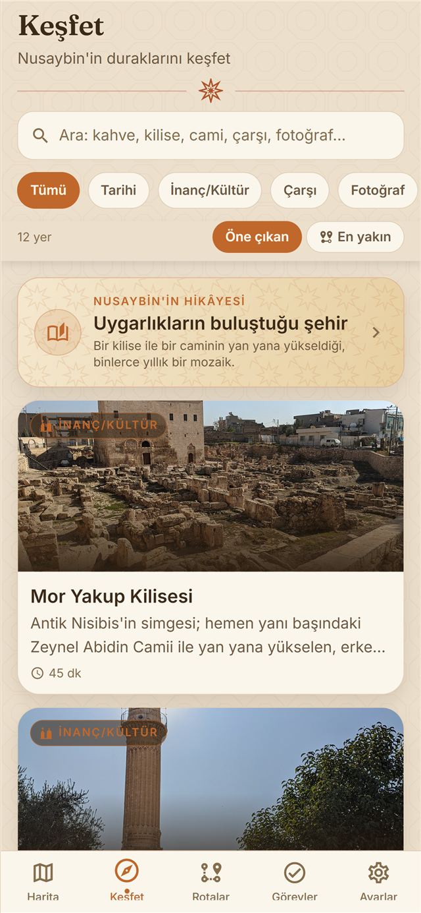
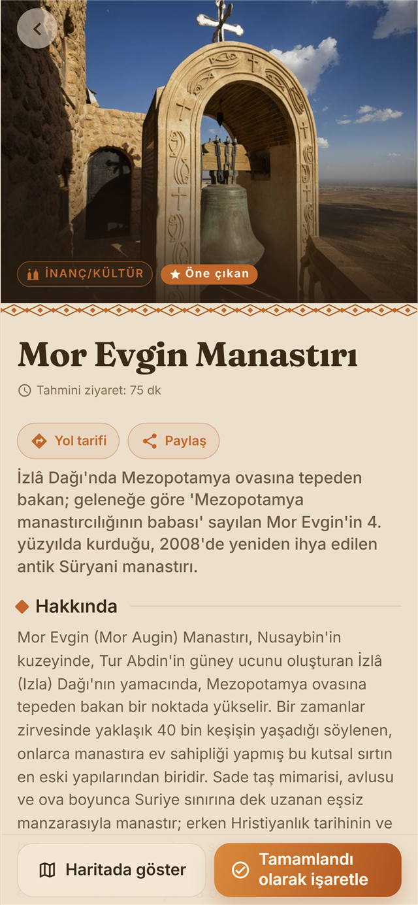
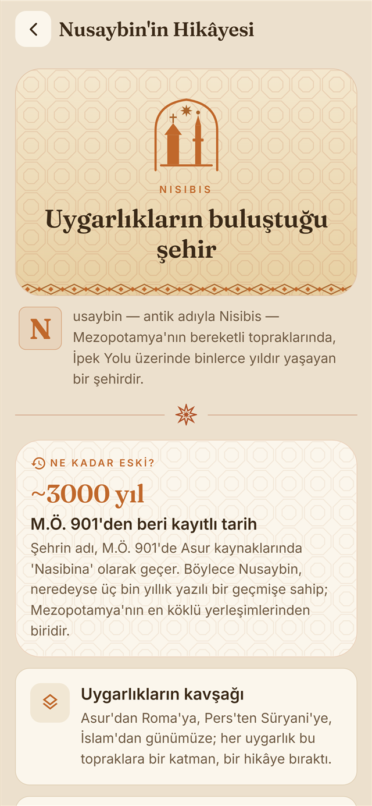
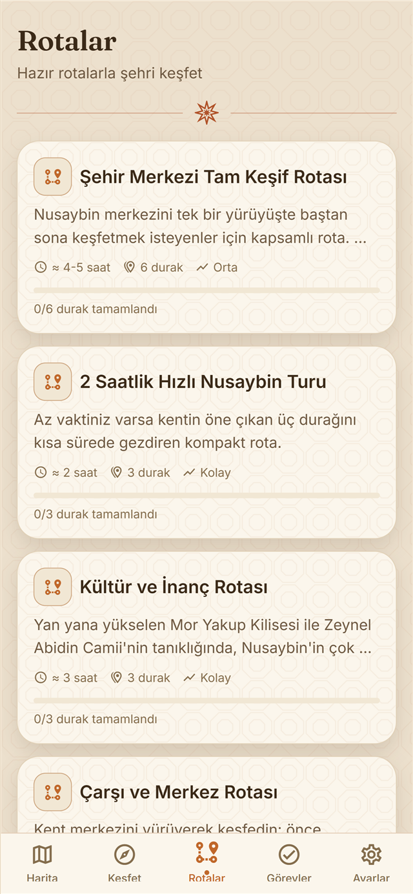
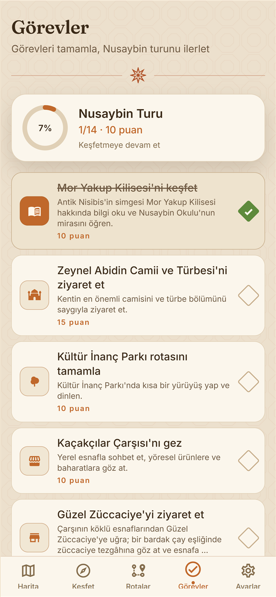

Nusaybin'in dijital keşif rehberi
Nisibis; Mor Yakup Kilisesi ve Zeynel Abidin Camii'nden Girnavaz Höyüğü'ne, Mor Evgin Manastırı'ndan tarihî çarşılara kadar Nusaybin'in önemli duraklarını harita üzerinde gösteren, hazır rotalar ve keşif görevleri sunan ücretsiz bir mobil uygulamadır. Tüm içerik güvenilir kaynaklara dayanır; tamamen Türkçe, İngilizce ve Arapça sunulur.

Haritada Keşfet
Yakınındaki önemli durakları haritada gör.

Her Mekânın Hikâyesi
Tarih, yapılacaklar, ipuçları ve ziyaret notları.

Nusaybin'in Hikâyesi
Çağlara ayrılmış interaktif zaman çizelgesi.

Hazır Rotalar
Yarım günden tam güne keşif rotaları.

Görevlerle Gez
Tamamla, puan topla, ilerlemeni gör.
Cepte bir kültür rehberi
Harita ve canlı konumÖnemli durakları harita üzerinde, yanındakileri tek dokunuşla.
Hazır keşif rotalarıYarım günlükten tam güne, ilgi alanına göre gezi planları.
Görevler ve ilerlemeKeşfettikçe tamamla, puan topla; gezi bir maceraya dönüşsün.
Üç dildeTürkçe, İngilizce ve Arapça; yerli ve yabancı her ziyaretçiye.
Nusaybin'in HikâyesiAntik Nisibis'ten bugüne, interaktif bir tarih anlatısı.
Gizlilik dostuKonumun cihazından çıkmaz; ücretsiz ve reklamsızdır.
Nusaybin STK'ları için nasıl faydalı?
Nisibis'i kurumunuzun çalışmalarında ücretsiz bir tanıtım ve eğitim aracı olarak kullanabilirsiniz:
- Kültürel mirası ve dinî çeşitliliği (yan yana kilise ve cami) tanıtın.
- Ziyaretçilere, gönüllülere ve misafirlerinize hazır bir rehber sunun.
- Gençlik ve eğitim programlarında yerel tarih kaynağı olarak kullanın.
- Etkinlik ve turlarınızı uygulamadaki rotalarla eşleştirin.
- Sahalarda QR kodlarla ziyaretçiyi doğru mekâna yönlendirin.
- Nusaybin'e saygılı, sürdürülebilir turizmi birlikte destekleyin.
Hemen deneyin
İndirin, birlikte Nusaybin'i tanıtalım
Nisibis'i deneyin, ekibinizle paylaşın ve geri bildiriminizi bize iletin. İş birliği ve önerilere açığız.